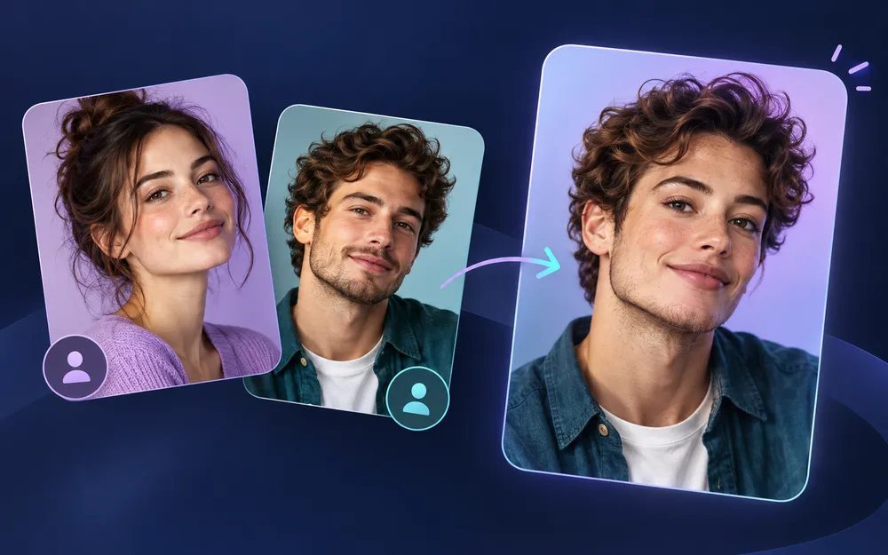
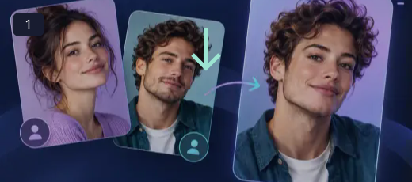
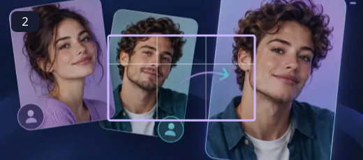

AI Face Swap
Explore a creative portrait idea with permission, care and a clear eye for the final result.
A convincing creative portrait depends on compatible source images. Similar face angles, even lighting and an unobstructed view give the service a clearer starting point. Treat the result as an edit to review, not a promise that every face will blend perfectly.
How to use AI Face Swap ↓How to use AI Face Swap

Choose the source face
Upload a clear photo of the face you are allowed to use. A front-facing image with good lighting helps.

Choose the target photo
Upload the image where the face should appear. Check that you have permission to edit and use it.
Start the AI process
Submit the two images to the service and allow the processing job to finish. Queue times can vary.
Review and save
Inspect the result carefully, then download it if you are satisfied.
Create with consent
Use photos of adults who have agreed to the edit, and use source material you have permission to process. Review eyes, hairlines and skin tones before downloading. Label edited images when context could mislead viewers. Both source and target images are sent to the connected processing provider.
- A simple source-and-target workflow.
- Cloud AI handles the face replacement.
- Preview the finished image before saving it.
Use sharp, well-lit images with faces at similar angles. Face swaps can look unnatural with extreme angles, occlusions or very different lighting. Do not use edited images to impersonate someone or mislead viewers.
Questions, answered
Why can processing take time?
The request is handled by a remote AI service. Its queue and processing load can affect completion time.
Do the images stay on my device?
No. The images are sent to the connected cloud processing provider for the swap.
Can I swap any person’s face?
Only use images when you have permission and follow applicable laws and the rights of the people depicted.
Will this replace my original file?
The tools create a separate output. Keep the original until you have checked the exported file; the site does not provide cloud project backups.
Can I publish the result?
Use source media you own or have permission to edit. Check the destination’s requirements and the rights of anyone shown before publishing.